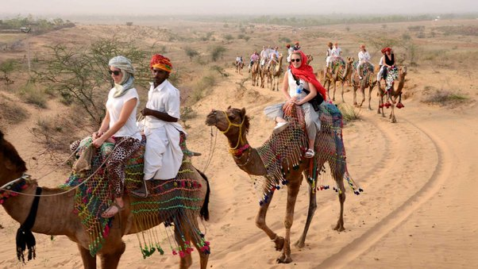
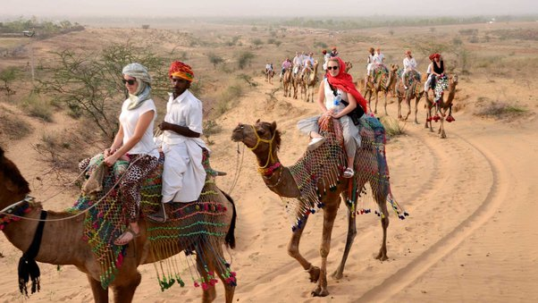

Places For Desert Safari In Rajasthan
Find your peace of mind by connecting with nature among the sand dunes of Rajasthan. With the multitude of deserts to visit in the state, one may often find themselves in a dilemma of missing out on some of the most spectacular sights. The Thar desert, which is among the top 5 most famous deserts in the world lies in Rajasthan and has a surreal view to offer. Not only is it beautiful to see the camels treading through the sand during the day, it also offers a dreamlike view of the stars at night. The camel safari and camel racing are two of the most appealing activities that one may go to the deserts for. Camping out at night in the deserts is an experience in its own. One can witness the sky in its full blown glory. Gazing at the sky for the sunset can have a soothing and calming effect on a person's mind. Rajasthan, in fact, as a whole is also classified as a desert state. Out of the 6 cities in Rajasthan, Jaisalmer and Bikaner are primarily made up of deserts. So, if one wants to experience the core essence of Rajasthan, visiting its deserts is a must. Besides, one may also get picturesque photographs clicked amidst the peaks made of sand.
About Camel Festival In Bikaner
The Camel Festival in Bikaner is one of the most famous festivals of Rajasthan. The Bikaner Camel Festival is a must visit when here, since it offers a great chance to see the rural life of Rajasthan and mingle with the locals. There are camel performances, such as camel races, camel rides and even camel dances. What could be better? It is a yearly event that is held in the Thar Desert, during either early January or late December. It is a two day festival, which also offers other options for enjoyment such as folk music shows, puppet shows, the spectacular Fire Dance and an amazing fireworks display. The food at the Camel Festival in Bikaner is something to write home about for sure. Apart from the delicious food that Rajasthan is famous for such as the kachodis, ghewar, dal baati, and other items, the Bikaner Camel Festival also offers tourists a chance to taste tea made from camel milk. There are also sweets available that have been made from the rich, thick camel milk. The Festival is certainly unique in what it offers to tourists and locals alike. In fact, it can be said that this is the most popular camel festival of Rajastha
Paramotoring In Jaisalmer
Paramotoring in Jaisalmer is yet another pulsating adventure sport to indulge in during your Rajasthan trip. This is a motor-powered parasailing sport, which offers breathtaking views of the golden sand dunes from the sky.